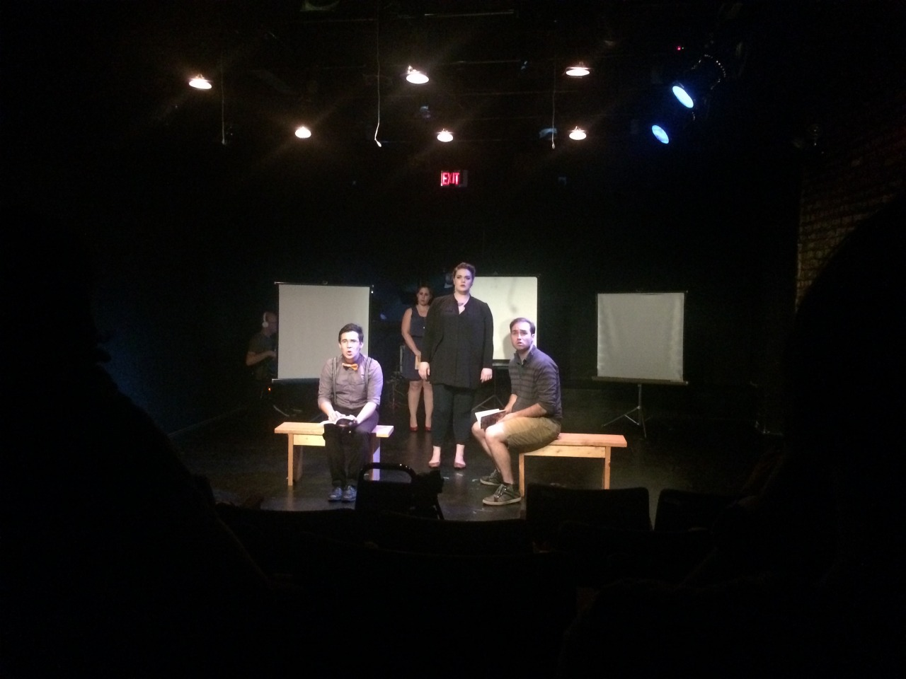

Artwork
**THIS SITE IS STILL UNDER CONSTRUCTION.
LINKS AT THE TOP WILL NOT WORK
PICTURES ARE STILL BEING ADDED**
Click on a category to the right
or scroll for *somewhat* chronological order.

Tattoo Flash Paintings
Be Human 2018

Join Me 2018
Git 'R Done 2018
Lock and Key 2017
If you don't see it...Just Ask 2017
Tattoo Sunday Drawings
Every Sunday I go to a spot w/ a crew to talk and draw. These are some of the drawings.
Hammered Paintings
I've been working on big, hammered paintings since September, 2015
Marilyn Peach Fuzz, 2017
Almost, 2017
Protest sign for Women's March, 2017
Peace, 2017
A US Painting, 2016
Standing Rock, 2016
Waiting, 2016
Time, 2016
Fate, 2015
Speech and Debate
I designed the props for 'Speech and Debate', a production put together by Brown Paper Box Co.
about three lonely teens in Salem, Oregon try to make sense of a sex scandal by forming a speech and debate club in their High School.
Written by Stephen Karam
Directed by David Lipschutz
Production Photos by Zach Dries
Ran February 9 - March 4,2018


Click Here for more information about this production
GingerBreadBleach
On December 16, 2017 Ike Sugar and I put together an event for St. Lucia's Day, a scandinavian holiday celebrating the return of light. I put together a workshop on how to make gingerbread houses, and Sugar taught classes on how to bleach natural fibers over a fire using, netting, lace, and paint brushes.
NutcrackerShadow
Charles Joseph Smith and I collaborated on a performance to 'Pas de duex' from the Nutcracker for the opening of Robin Hustle's SLIT WAVE SHEATH HEARTH
at Kim's Corner Foods.
Some sketches while we brainstormed our performance:
livingRoom
I was asked by Martha Bayne and Andrea Jablonski to make an installation for
A Memory Palace of fear, a haunted house about housing put together by Theater Oobleck.
I based this installation off of the Hans Christian Anderson story The Little Match Girl. Patrons would walk down a hallway and peer through different windows at holiday scenes.
At the end of the hallway they would end up in a living room where I provided mixtapes, and food that reminded people of home, drawing materials, paper, and the history of
the top 10 most common houses in Chicago and prompted people to draw what home means to them. A Memory Palace of Fear took place from October 19 - October 31, 2017.
To see the installation that I made for A Memory Palace of Fear in 2016, click here
Feline Cooks
Alicia Obermeyer and I put together a skit for Casual Agony, a comedy/variety hour at Café Mustache put together by Ed Rivera, and Sarah. We played versions of Martha Stewart and Dolly Parton, while talking about how to cook a cat. We then had an audience member play bozo buckets, and if they missed the bucket- they got slimed. They missed the bucket. The performance took place August 11, 2017.

Some cat drawings that friends made for the backdrop:
Douglas Park Time Observation Club
In the summer of 2017 Rebecca Wolfram and I started the Douglas Park Time Observation Club. A group that meets and observes time in whichever way they choose. Most draw, or take pictures. Others have written, and sang songs. We meet at least once a month in the warmer months. My objective is to document the people, objects, landscape, and gentrification happening around the park.
We had a table at the North Lawndale Art Fest in 2017 and drew people's portraits and entered them into our time observation documents

facebook page for the Douglas Park Time Observation Club
Music House School of Performing Arts
I am a teaching artist for The Music House School of Performing Arts. I typically help with the set, costumes, and props for their theater productions. I've also edited video, and put together multimedia presentations for the students. Here are some examples of the work I've done for them:
Backdrop for their production of the Lion King

Backdrops for a play about the Harlem Renaissance performed by Chicago Public School Students at Cook Elementary.
Multi-media presentations for Telling Stories Through Hip Hop Theatre, a program where students write and record their own hip hop tracks and perform them for their parents and peers in 2017. I helped the students formulate and animate their ideas for the performances. Below is an example of one of the animations I put together based on the students ideas, and a short commercial showing snipets of their performances. To see the full performance you can go here. Or to watch more of just the animations I put together go here.
I designed the curriculum, and taught the kids at Dvorak Elementary costume and set design for their production of The Jungle Book. in 2016.

fortuneTeller
In 2016 I built a fortune teller booth and gave housing fortunes during A Memory Palace of Fear, a haunted house written by Martha Bayne and presented by Theater Oobleck.
Performed at Silent Funny.
Now.Here.This
I designed the Set, and Props.
Directed by William Panik
Production Photos by Zach Dries
for more information, you can go here.

Jobholder: Art by People in the Service Industry
I curated a group show in May 2016 that featured work by people who work in the service industry. The service industry employs 80% of the Amercian workforce,
in contrast the artworld employs roughly 1.9%.
What does it mean when a country is run by those who serve others? What does life look like through the eyes of those who serve for a living? What will it mean when automation starts to take over these jobs? The Egg will be examining this and more through the art and words of people in the service industry.
For this show, I put together art from people who consider themselves artists, and some who do not. There was a microphone handy for anyone who wanted to give their 2 cents. The art was priced so that service industry employees could afford it.
The closing event featured a yard sale with goods from the artists, and a performance by Cavenaw and Cavenis
The facebook event for the show is here.
For more information and pictures, you can view the photo album here.
Interviews with some of the artists are here.

PeepShow
Created a PeepShow for InHabit's Sex Habits.
Citizens would enter a dark booth and were prompted to pay $1 for 1 minute. There were headphones with Linda Scott's I've Told Every Little Star playing on repeat. Once the dollar was inserted into the slot, I would open the hatch and perform a "show".
more information about the artists and the show here.
Mask Archery
Made an archery range for Just Throw More Glitter on it, a part of the 2nd Floor Rear festival, and the closing of Templehead, a gallery in Pilsen run by Heather Lynn
Mystery Wall
Made a Mystery Wall for $!TU@T!0N$ 2015 halloween w/ holes where you could touch dead, worms from a butt, Lorena Bobbit was here, ass flesh with dingleberries, and dorothy's juices !
Confession Booth
In 2015 I made a confession booth for Fermentation Fest's farm/Art DTour during my residency at the Wormfarm Insititute.
The Farm/Art DTour is a 50+ mile long scenic ride through the driftless region of Wisconsin. Fest goers make stops at different art installations using the land as inspiration.
The confession booth was about a half a mile walk inside of an abandoned apple orchard in North Freedom, WI. Patrons would make park their cars or bikes along the road and make their way to the confession booth where they would find instructions telling them to confess, and in return they would receive their portrait. They could not see me, and I would not speak- but I would draw as they confessed.
Over 200 people confessed during the week of fermentation fest.


Shows I curated at The Egg
The Egg was a garage gallery space started byJill Flanagan and I in 2015. Here are some of the solo shows that I curated in the space.
Demon Art Show
September 30 to October 7, 2016. Art by Susan Mullen, Haley Rovak, and sound by Antonio Leonardo Miller. Facebook Event here.
Susan Mullen
Susan Mullen
Exhibit 11: Greetings from Wade.
September 8 to September2 2, 2016. Art by Vanessa Pearl, Damian Languell, Matthew Strange, David Kenedy, and Roxy Jade. More pictures here.
Collaboration piece
Herbs from the garden, sculptures by Vanessa Pearl
Vanessa Pearl
Matthew Strange
Fred Henzel: For What Isn't it Worth it?
July 8 to July 21, 2016. More photos here
Fionnuala Cook's Conspire is a Word that Means we Breath Together.
A book release, and art by Fionnuala Cook. From August 14 to August 28, 2015. More pictures and info here.Facebook invite here.
Devil's Night: The Art of Mony Nuñez, Chloë Perkis, and Ray Zibits.
October 30 to November 11, 2015. More Photo's here. facebook event page here.
Mony Nuñez
Chloë Perkis
Ray Zibits
Puppet Workshop by Monstrochika for the Little Village Art Fest.
Link to photo album here.
Sarah Marie Coogan's Postapocolympic.
August 14 to August 28, 2015
Day Drinking
Curated an art show in 2015 around the theme of day drinking for the grand opening of The Egg. on the fourth of July.
Below are some pictures of the installation, as well as a few pieces I made for the show. For more pictures and information you can go here.
You can peep at the facebook event here.
Robert Boyle's perpetual motion machine with beer
BBQ woodcut
Title of Show
I did set and props for Title of Show, a musical about making a musical.
Directed by William Panik.
More info here.
Chicago Tribune feature
StreetScene
A collab play by Clayton Bond and myself (aka MORTVILLE). We put this together for cake bake, a fundraiser for CAKE when our friend Max Morris was putting the show together.
It was performed on April 25, 2015 at NO NATION
the idea was to create a moment on a street block- inspired by Do the Right Thing and A Bronx Tale.
The pictures show the 'set', and the video gives you more of an idea of the performance aspect of it- even though it's dark and you can't really hear...either way just check it out.
Mandy Halford…………………………….BBQ Crew #1
Nick Fisher……………………………….BBQ Crew #2
Vitto Carli………………………………….BBQ Crew #3
Sara, Stephany Rohr, Bret Koontz, Brian Sulpizio…………….Singers
Bob Haase and Tanner Greenlee………….Craps players
Baby Locust……………………………….Skateboarder
William……………………………….Preacher
Mitch Buller……………………………….Drug Dealer
Jordan Brzezinski, Simone York..………Twin Valley Girls
Alyssa Herlocher…………………………Real Estate Agent
Jail, Sara…………………………………………bank robbers
Jessica Saldaña, Ryan………………….Cops
John Hardwick……………………………rich gentleman
Sarah Luscko……………………………rich lady
Mikey………………………………………….Graffi­ti artist
Nate………………………………………….lookout
Alicia Obermeyer………………………haggard homeless lady
fred henzel………….city worker

FinnishMythsPrimavera
I made an installation for Modern Folk, a show curated by Andrea Jablonski at GAG Gallery on April 11, 2015.
I drew inspiration from the Kalevala, an ancient finnish mythological tale, Primavera by Botticelli, and nordic mythology
Benefit for Chuy Garcia
Robin Hustle and I put together a benefit show on February 7, 2015 for Chuy Garcia's mayoral run against Rahm Emanuel in 2015.
It took place at Club Rectum. ONO, Toupee, Haki and Leslie played, and Chuy came to speak!
There is video below.
And the facebook event is here.
Glitter Guts photobooth pictures are here.
Robin doing the raffle
flyer for Chuy that I made
banner that I made
banner that Carrie Vinarsky made
Another banner I made
Banner that Heather Lynn made.
BlackAndWhiteShack
A shack based on the one from Charlie Chaplin's The Gold Rush for
the Black and White show put together by Nick Fisher on January 16, 2015
I dressed like Steve Jobs and read inspirational quotes by dictators and attributed them to Steve Jobs. Each board was hand painted with a fake woodgrain tool. I also served cake with the front page of the Chicago Tribune from the day that the art show was, ing the year The Gold Rush was made.
And a black leather shoe cake.


MORTVILLE + $!TU@T!0N$
To raise money for Neo Chicago, we built a bunch of installations with a Chicago theme, and held a fundraiser at $!TU@T!0N$.
I made a Faster, Pussycat, Kill! Kill!, and a fire themed install.
Other installations were by
Nick Fisher
Stephany Colunga
Ray Zibits
Alyssa Herlocher
and Melanie Clothehilde
Performances by ONO, lil tits, Machismo, Hazel Bishop, Lord Viper, cavenaw & cavenis, and DJ Mrs. Doubtfire.
More pictures here.
Comics
Comics based on a rorshach.
#1, 2013
#2, 2013
#3, 2014
Flyers
I organized an Earth Day event in 2017 for Douglas Park, Chicago, IL.
I created a spring seasonal bird watching guide with Eric Gyllenhaal, who runs the Nature in Douglas Park website and facebook group.
We also had a clean and green, lunch, speeches by local high school students from CCA Academy, as well as plants grown by them, The Succulent City
, and a aquaponics demonstration by Aqualogue.
Duffy Bags
Bags that I designed in 2012-2014
Eye Bag
Fabric designed, silkscreened, and sewn by me.
Skull Bag
Skull silkscreened on floral fabric, and sewn by me.
Jim Flora Bag
Drawing silkscreened on black and orange fabric, and sewn by me.


Clown Bag
Drawing silkscreened on abstract watercolor fabric, and sewn by me.
Girl Group Chicago
Sang, choreographed, and sewed half of the costumes designed by Erica Hohn
Stripe Paintings
Stripe Paintings made from 2012 thru 2014
MORTVILLE
MORTVILLE was the top floor of a warehouse that Clayton Bond and myself lived, curated, and ran from 2008 - 2013.
We would come up with themes, and then build huge sets in our 1700+ sq foot space where bands and performances would take place.
Below is some of the documentation of the sets we built on a $0 budget.
Funhouse
Opened July 1,5 2011 to kick off Bitchpork, a three day music fest w/ 48 bands and three stages.


Events in History
Events in History was up from May 13, 2011 to late June 2011. The idea was to build sets based off of "historical events".
There was a dinosaur area, medieval torture chamber, Gone with the Wind Price is Right showcase, Mount Rushmore, History of Mortville wheatpaste, Manson Murders, the Birth of Jesus, Richard Speck arrest site, Elvis, and the moon landing.
I personally built the Gone with the Wind Price is Right showcase, and Mount Rushmore.


Neverending Candyman
Neverending Candyman was inspired by the movies Neverending Story, and Candyman.
This set up was up for one night only, and the documentation is not so great- to pretty much non existant. For this set we painted a mural of candyman's hook on our ceiling, a gigantic couch/Falkor, a cave, mirror gate where you see your "true" self (I put Oprah as the reflection), and the candyman mural where you walk through the mouth.


Garbage World Kids
The Garbage World Kids set was inspired by the 3 day performance art festival 'Garbage World', which was curated by Eileen Lillian Doyle.
Here are a few pictures below of the garbage pail kids that I made.


Summer
The Summer set opened on April1 1, 2010 and closed on


Apocolypse
The apocolypse set opened November 5, 2009 and was basically taking the previous set (a street-scape) and making it look like the world had ended. I re-created the room from Goodnight, Moon, and turned the "motel" into a black hole, leading into a weird cult. A women with a watermelon stomache, among many other things.


Street Scene
We wanted to have a set that showcased the flyers of , and I came up with the idea that we build a street scene to paste the flyers on. I built the motel, the $5 store, and white widow lounge. Clayton built the video rental store and pharmacy.


The Slow Club
I recreated The Slow Club from Blue Velvet, a movie by David Lynch. It opened on May 30, 2009.


$5 Store
The $5 Store was Mortville's first set. We put a call out on craigslist, and myspace for artists to make items that you would find in a corner store, and then sell them for $5 each.
it opened April 10, 2009


Mixtapes
Some mixtapes I've made.
Finnish/folk music

10 minute mix
Paper Doll Mix about Mae West
Cook Book Mix
Confidential Mix.
Listen to an episode of First 48 and solve a puzzle with a pic of the murderer
Hairy Mix
Cook Book Mix